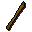
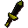
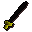
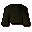
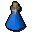

Shadow warrior
| Config name | shadow_warrior |
| NPC id | 158 |
| Combat level | 48 |
| Hitpoints | 67 |
| Attack / Strength / Defence | 36 / 33 / 36 |
| Respawn | 60 ticks |
| Options | Attack |
| Aggression | cowardly |
| Wander range | 4 tiles from spawn |
| Max range | 6 tiles from spawn |
| Area folder | area_ardougne_east |
| Defined in | scripts/areas/area_ardougne_east/configs/legends_guild/legends_guild.npc |
| Bonuses | Attack bonus 20, Strength bonus 26, Stab def 43, Slash def 31, Crush def 19, Magic def 15, Range def 38 |
Shadow warrior
A fighter from the supernatural world, he's a shadow of his former self.
Show all 11 spawns on the world map → Open in knowledge graph →
Drops
Drop script: scripts/drop tables/scripts/shadow_warrior.rs2 (specific handler)
Drop table
| Item | Quantity | Rarity | Notes |
|---|---|---|---|
| 8 | 47/128 (36.72%) | ||
| Herb drop table table | see table | 9/64 (14.06%) | |
| 3 | 9/128 (7.03%) | ||
| Gem drop table table | see table | 1/16 (6.25%) | |
| 2 | 3/64 (4.69%) | ||
| 45 | 1/32 (3.12%) | ||
| 2 | 1/32 (3.12%) | ||
| 1 | 1/32 (3.12%) | ||
 Adamant spear | 1 | 1/128 (0.78%) | |
 Black dagger(p) | 1 | 1/128 (0.78%) | |
| 1 | 1/128 (0.78%) | ||
 Black longsword | 1 | 1/128 (0.78%) | |
 Black robe | 1 | 1/128 (0.78%) | |
 Weapon poison | 1 | 1/128 (0.78%) |
Locations
| Area | Coordinates | Level | Count | Map |
|---|---|---|---|---|
| Legends Guild (underground) | 2693, 9776 | 0 | 1 | view |
| Legends Guild (underground) | 2697, 9773 | 0 | 1 | view |
| Legends Guild (underground) | 2697, 9779 | 0 | 1 | view |
| Legends Guild (underground) | 2700, 9770 | 0 | 1 | view |
| Legends Guild (underground) | 2700, 9774 | 0 | 1 | view |
| Legends Guild (underground) | 2700, 9777 | 0 | 1 | view |
| Legends Guild (underground) | 2701, 9781 | 0 | 1 | view |
| Legends Guild (underground) | 2703, 9770 | 0 | 1 | view |
| Legends Guild (underground) | 2703, 9774 | 0 | 1 | view |
| Legends Guild (underground) | 2703, 9779 | 0 | 1 | view |
| Legends Guild (underground) | 2706, 9772 | 0 | 1 | view |
Referenced in scripts
scripts/drop tables/scripts/shadow_warrior.rs2